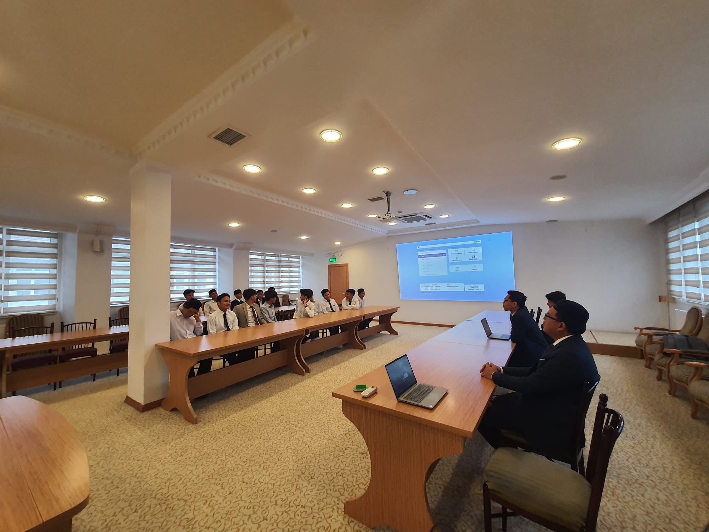

Muhammad Adil Maulidi

Profil Singkat
Muhammad Adil Maulidi lahir di Cirebon, Jawa Barat, Indonesia, dan merupakan anak pertama dari empat bersaudara.
Ia menyelesaikan pendidikan terakhirnya dengan meraih gelar Sarjana Agribisnis di Universitas Islam Negeri (UIN) Jakarta.
Pendidikan
- TK AT-Taqwa Kota Cirebon
- SDN Kebon Baru VII Kota Cirebon
- SMPN 2 Kota Cirebon
- MAN 2 Kabupaten Cirebon
- Agribisnis UİN Jakarta
Pengalaman Organisasi
- Kelompok İlmiah Remaja
- İNKAİ Karate
- Data Science UIN
Kemampuan
- Microsoft Office
- Akuntan
- Penyelia Jaminan Halal
- Budidaya Tanaman/Sayuran Organik
İnformasi Lebih Lanjut
- Tentang Saya
- Kontak